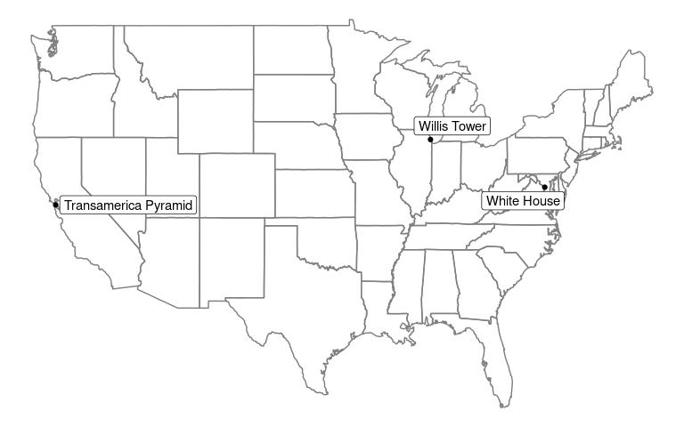

Introduction
Tidygeocoder makes getting data from geocoding services easy. The currently supported services are the US Census geocoder, Nominatim (OSM), Geocodio, and Location IQ. Batch geocoding (geocoding multiple addresses per query) is used by default for the US Census and Geocodio services when given multiple addresses. Duplicate, NA, and blank address data is handled elegantly - only unique addresses are passed to geocoder services.
In addition to the brief usage example below, you can find a blog post I wrote up on geocoding landmarks in Washington, DC here.
Installation
To install the stable version from CRAN (the official R package servers):
install.packages('tidygeocoder')
Alternatively you can install the development version from GitHub:
if(!require(devtools)) install.packages("devtools") devtools::install_github("jessecambon/tidygeocoder")
Usage
In this example we will geocode a few addresses in the sample_addresses dataset using the geocode() function and plot them on a map with ggplot.
library(dplyr) library(tibble) library(tidygeocoder) # create a dataframe with addresses some_addresses <- tribble( ~name, ~addr, "White House", "1600 Pennsylvania Ave Washington, DC", "Transamerica Pyramid", "600 Montgomery St, San Francisco, CA 94111", "Willis Tower", "233 S Wacker Dr, Chicago, IL 60606" ) # geocode the addresses lat_longs <- some_addresses %>% geocode(addr, lat = latitude , long = longitude)
The geocode() function attaches latitude and longitude columns to our input dataset of addresses. Note that this code uses the US Census geocoder since the method argument is not specified. To use other geocoder services, you can specify them with the method argument. See the geo() function documentation for details.
| name | addr | latitude | longitude |
|---|---|---|---|
| White House | 1600 Pennsylvania Ave Washington, DC | 38.89875 | -77.03535 |
| Transamerica Pyramid | 600 Montgomery St, San Francisco, CA 94111 | 37.79470 | -122.40314 |
| Willis Tower | 233 S Wacker Dr, Chicago, IL 60606 | 41.87851 | -87.63666 |
We can then plot our addresses on a map using the longitude and latitude coordinates.
library(ggplot2) library(maps) library(ggrepel) ggplot(lat_longs, aes(longitude, latitude), color="grey99") + borders("state") + geom_point() + geom_label_repel(aes(label = name)) + theme_void()

To return the full results from a geocoder service (not just latitude and longitude) you can use full_results = TRUE. Additionally, for the Census geocoder you can use return_type = 'geographies' to return geography columns (state, county, Census tract, and Census block).
full <- some_addresses %>% geocode(addr, full_results = TRUE, return_type = 'geographies') glimpse(full) #> Rows: 3 #> Columns: 15 #> $ name <chr> "White House", "Transamerica Pyramid", "Willis Tower" #> $ addr <chr> "1600 Pennsylvania Ave Washington, DC", "600 Montgome… #> $ lat <dbl> 38.89875, 37.79470, 41.87851 #> $ long <dbl> -77.03535, -122.40314, -87.63666 #> $ id <int> 1, 2, 3 #> $ input_address <chr> "1600 Pennsylvania Ave Washington, DC, , , ", "600 Mo… #> $ match_indicator <chr> "Match", "Match", "Match" #> $ match_type <chr> "Non_Exact", "Exact", "Exact" #> $ matched_address <chr> "1600 PENNSYLVANIA AVE NW, WASHINGTON, DC, 20006", "6… #> $ tiger_line_id <int> 76225813, 192281262, 112050003 #> $ tiger_side <chr> "L", "R", "L" #> $ state_fips <int> 11, 6, 17 #> $ county_fips <int> 1, 75, 31 #> $ census_tract <int> 6202, 61100, 839100 #> $ census_block <int> 1031, 1013, 2006
For further documentation, refer to the Getting Started Vignette and the function documentation.